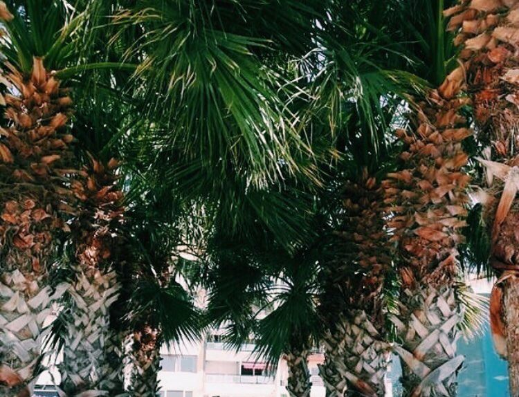
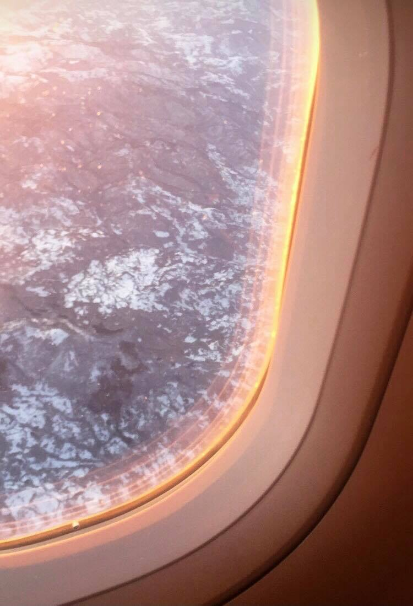

Passion of mine
Benefits of travelling - It teaches you about the world "The world is a book, and those who do not travel read only a page." -said Saint Augustine. Travelling can teach you more than any university course. You learn about the culture of the country you visit. If you talk to locals, you will likely learn about their thinking, habits, traditions and history as well.You can learn a lot about yourself through travelling. You can observe how you feel beeing far from your country. You will find out how you feel about your homeland. You will realise how you really feel about foreign people. You will find out how much you know/do not know about the world. You will be able to observe how you react in completely new situations. You will test your language, orientational and social skills. You will not be the same person after returning home.During travelling you will meet people that are very different from you. If you travel enough, you will learn to accept and appreciate these differences. Traveling makes you more open and accepting.Some of my most cherished memories are from the times when I was travelling. If you travel, you can experience things that you could never experience at home. You may see beautiful places and landscapes that do not exist where you live. You may meet people that will change your life, and your thingking. You may try activities that you have never tried before.Travelling will inevitably make you more independent and confident. You will realise that you can cope with a lot of unexpected situations. You will realise that you can survive without all that help that is always available for you at home. You will likely find out that you are much stronger and braver than you have expected.If you travel, you may learn a lot of useful things. These things can be anything from a new recepie, to a new, more effective solution to an ordinary problem or a new way of creating something.
Turkey
And their mentality,they are so warm and frendly people, nothing similar to people from Europe
Capital of Hungary

I usually travel with plane, its faster and quite safe.
Captial of Belgium

.jpg)
.jpg)
Captial of Moldova
The Parliament of the Republic of Moldova is the supreme representative body of the Republic of Moldova, the only state legislative authority, being a unicameral structure composed of 101 elected deputies on lists, for a period of 4 years.